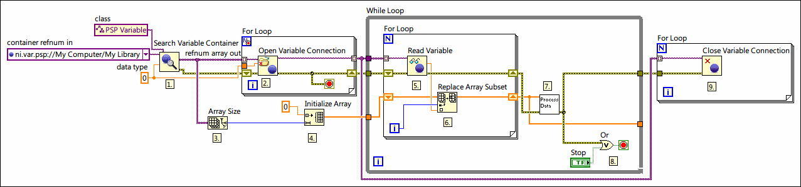
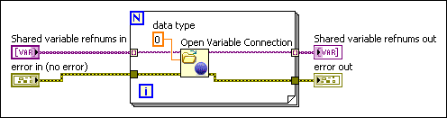
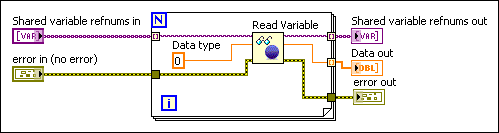

Reading and Writing Shared Variables Programmatically
If you have an application that accesses a large number of shared variables, you can read and write those shared variables programmatically with the Shared Variable functions. This programming technique often is cleaner and more scalable than using Shared Variable nodes because you can access multiple shared variables with a single Shared Variable function, whereas each Shared Variable node accesses a single shared variable only.
Note��You can access the following types of shared variables programmatically:
PSP Variables�Data items published on the network using the NI Publish-Subscribe Protocol (NI-PSP). Common examples of PSP variables include network-published shared variables, I/O variables with network-publishing enabled, and DAQ channels published through the NI-DAQmx I/O server.
The following figure shows an example of reading shared variables programmatically, placing those values in a preallocated array, and processing those values.

The following events occur in the previous figure.
The Search Variable Container function finds all of the shared variables of the double data type under My Library, and the refnum array out output returns an array of references to those shared variables.
The Open Variable Connection function uses the array of variable identifier URLs to open a connection to each shared variable. The For Loop stops if an error occurs.
The Array Size function uses the array of shared variable references to calculate the number of shared variables that the Search Variable Container function found.
The Initialize Array function uses the number of shared variables to create an array for the shared variable data. By initializing an array for the shared variable data outside of the While Loop, this application optimizes CPU usage.
The Read Variable function reads each of the shared variables that the Open Variable Connection function opened.
The Replace Array Subset function stores the shared variable data in the array that the Initialize Array function created.
The Process Data subVI processes the array of shared variable data.
The read and process operations run continuously in the While Loop until an error occurs or the user clicks the Stop button.
This application achieves the same functionality as one that uses Shared Variable nodes. However, because this application uses programmatic shared variable access, you can scale to hundreds or thousands of variables without updating the block diagram. For example, assume that My Library contains ten variables, Variable1 through Variable10. You could use the Batch Variable Creation dialog box to add Variable11 through Variable500 to My Library. After you redeploy My Library, the next time you run the VI, it reads Variable1 through Variable500 with no need to add Variable11 through Variable500 to the block diagram.
The following sections provide information about the programming techniques in the above example.
Finding Shared Variables
Use the Search Variable Container function to search for shared variables and variable containers that meet specific criteria. For example, the VI shown in the following block diagram uses this function to find all the shared variables under a given container that meet the following criteria:
Note��You can use the Browse Variable Object dialog box to browse for shared variables and variable containers at edit-time either on the network or in the current project. Click the drop-down arrow on a Variable control or constant, such as the container refnum in constant in the figure above, and select Browse to display the Browse Variable Object dialog box.
Caution��When reading and writing shared variables that you find programmatically, you might read or write data of the wrong data type. Use the data type input of the Search Variable Container function to avoid reading or writing a shared variable of the wrong data type.
You also can use the following Variable Container properties and method to find shared variables programmatically.
The Remote Engines property returns the array of PSP Variable Engines hosted on other computers on the network. The VI then iterates over each PSP Variable Engine in a For Loop.
The Root property obtains a reference to the root PSP Variable Container on each remote computer.
The All Variables property obtains an array of references to all the variables hosted on each remote computer.
The VI adds all the variables found on the network to the All PSP Variables array.
Tip��You can use the Variable Property Node, which is preconfigured with the Variable Object class, as a starting point for building the block diagram in the previous figure.
Opening and Closing Shared Variable Connections
Use the Open Variable Connection function to open a connection to a variable programmatically, as shown in the following block diagram.

After the application finishes accessing the shared variables, use the Close Variable Connection function in a For Loop to close all the variable references. This function frees the memory resources allocated to each variable connection.
Reading and Writing Shared Variables
Use the Read Variable function to read live variable values programmatically. Unlike the Shared Variable node, which you must bind to a specific shared variable at edit time, the Read Variable function includes a shared variable refnum in input that you use to specify the shared variable to read at run time. For example, you can use the Read Variable function inside a For Loop to read multiple shared variables specified by an array of refnums, as shown in the following block diagram.

Use the Write Variable function to write live variable values programmatically. For example, you can use the Write Variable function inside a For Loop to write to multiple shared variables specified by an array of refnums.